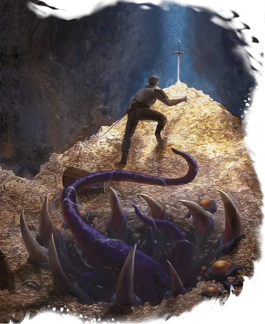

Мимик-сокровище
Hoard Mimic
Огромный Монстр (Перевертыш), нейтральный

Класс Доспеха 14 (природный доспех)
Хиты 123 (13к12 + 39)
Скорость 30 футов
| мод | спас | ||
|---|---|---|---|
| СИЛ | 21 | +5 | +5 |
| ЛОВ | 12 | +1 | +1 |
| ТЕЛ | 17 | +3 | +6 |
| мод | спас | ||
|---|---|---|---|
| ИНТ | 10 | +0 | +0 |
| МДР | 16 | +3 | +6 |
| ХАР | 10 | +0 | +0 |
Навыки Скрытность +6, Убеждение +3
Иммунитет к урону кислота
Иммунитет к состояниям сбивание с ног
Чувства тёмное зрение 60 футов, пассивное Восприятие 13
Языки Общий, Драконий, Телепатия 120 фт.
Опасность 8 (3900 опыта)
Бонус мастерства +3
Особенности
Обманчивая внешность (только в облике сокровища). Если мимик неподвижен в начале боя, он имеет преимущество в броске инициативы. Более того, если существо не наблюдало за движением или действием мимика, это существо должно преуспеть в проверке Интеллекта (Расследование) Сл 18, чтобы определить, что мимик является одушевленным.
Перевертыш. Мимик может действием превратиться в любой предмет, или принять свой истинный, бесформенный облик. Во всех обликах его характеристики остаются теми же самыми. Все несомое и носимое им снаряжение не превращается. Он принимает свой истинный облик, если умирает.
Действия
Мультиатака. Мимик совершает одну атаку Укусом и две атаки Ложноножкой.
Укус. Рукопашная атака оружием: +8 к попаданию, досягаемость 5 футов, одна цель. Попадание: 16 (2к10 + 5) колющего урона плюс урон кислотой 7 (2к6).
Ложноножка. Рукопашная атака оружием: +8 к попаданию, досягаемость 10 футов, одна цель. Попадание: 12 (2к8 + 5) дробящего урона и мимик прилипает к цели. Существо, приклеенное к мимику, также становится схваченным им (Сл высвобождение 16). Пока этот захват не закончится, цель опутана. Проверки характеристик для высвобождения из этого захвата совершаются с помехой.
Едкий туман (перезарядка 5-6). Мимик распыляет кислотный туман в 30-футовом конусе. Все существа в этой области должны совершить спасбросок Ловкости Сл 14. При провале существо получает 27 (6к8) урона кислотой и становится ослеплённым до конца своего следующего хода. При успехе существо получает половину этого урона и не ослепляется.
Описание
Родственные обычному мимику, описанному в «Бестиарии», мимики-сокровища являются одними из старейших и самых хитрых в своем роде. Массивная, аморфная форма мимика сокровища и мастерство изменения формы позволяют ему принимать вид огромного кладезя сокровищ, а не просто отдельного предмета. Подобно мимикам меньшего размера, мимики-сокровища выделяют клейкую слизь, чтобы заманить добычу в ловушку. Они также могут выпускать из своих пор мелкий едкий туман, который обжигает и ослепляет попавших в него существ.
Мимики сокровища названы так потому, что многие из них вступают в партнерские отношения с драконами, каждый из которых служит ложным сокровищем в логове дракона, чтобы отвлечь невольных злоумышленников от настоящих богатств — и в пасть мимика. Однако, столкнувшись с неожиданно ожесточенным сопротивлением, мимик сокровища может предложить информацию об истинном кладе в обмен на свою жизнь.